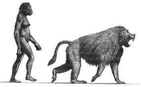

Información
Género
Sivatherium
Periodo
Pleistoceno inferior
Encontrado en
Cueva Victoria
Altura
1.15 - 1.38 m
Peso
30 - 80 kg
Descripción
Es pariente cercano del gelada actual (Theropithecus gelada), y del babuino gigante , fue descubierto en África del Sur, Argelia, Etiopía, Kenia, Marruecos y Tanzania. Data del Plioceno hasta la mitad del Pleistoceno. Sus restos de Cueva Victoria fueron excavados por Josep Gibert i Clols.
Fue uno de los primates cercopitécidos más grandes conocidos, con un fuerte dimorfismo sexual. De ahí se debe su variación de peso en su ficha técnica (además de siempre un margen de variación).